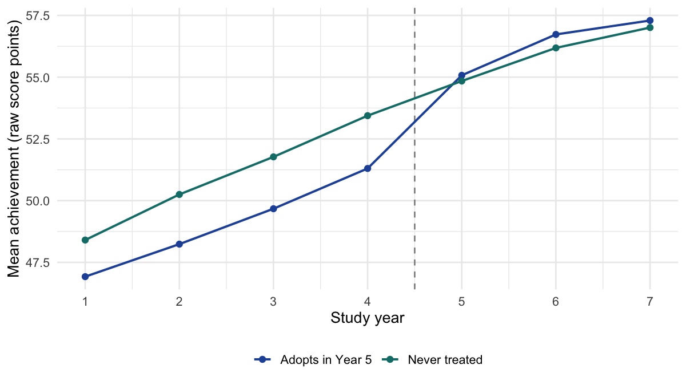
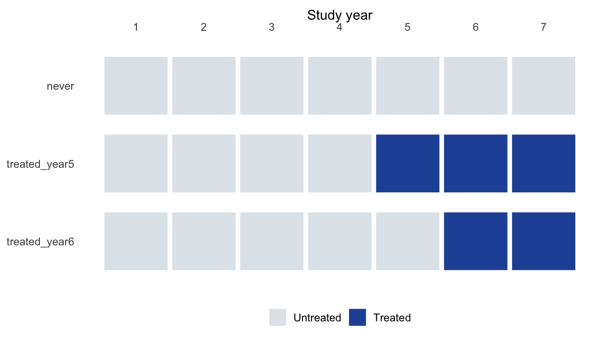
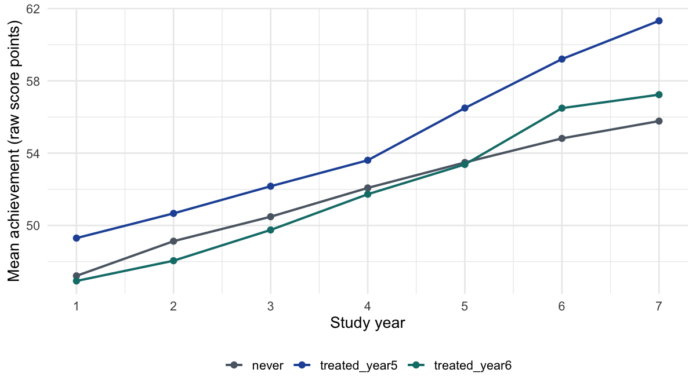
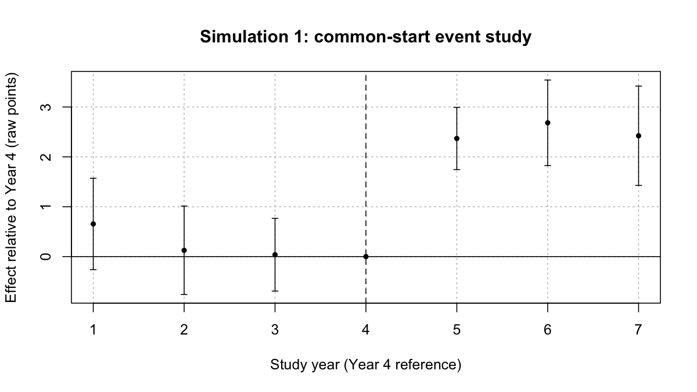

Hands-on R Lab
October 22, 2026 | 1:00-1:30 PM Eastern
This guided lab applies traditional and staggered DID methods to two simulated district-year datasets. We begin with a common treatment start, then examine districts adopting a gifted education program in different years. These are synthetic teaching examples, not the data or results of an actual gifted education study.
Download the complete R script · Download the R Markdown · Data and codebook
The walkthrough connects each model’s equation to its R function, arguments, and interpretation. Figures provide context; their plotting code is available in the complete downloadable script rather than in the main walkthrough.
Allow 5 minutes for setup and data, 10 minutes for traditional DID, and 15 minutes for staggered DID and aggregation. The last two sections are optional follow-up.
Before You Begin
Install R and RStudio before the session. Run the installation code once, then load the packages each time you start a new R session. No prior DID programming experience is required. An internet connection is needed for package installation and for downloading the datasets; downloaded files can be used offline.
Install packages (run once before the lab)
install.packages(c("dplyr", "readr", "ggplot2", "fixest", "did", "etwfe", "knitr"))library(dplyr)
library(readr)
library(ggplot2)
library(fixest)
library(did)
library(etwfe)
library(knitr)
set.seed(20261014)1. Meet the Data
Each row represents one district in one study year. Both panels contain 160 districts observed for seven years (1,120 rows), with no adjustment covariates. Treatment stays on after adoption. Years 1-4 precede the earliest adoption.
The code first looks for local files, then uses the workshop downloads. To work offline, place the CSV files in your working folder or its data subfolder.
read_workshop_data <- function(filename) {
candidates <- c(file.path("assets/data", filename), file.path("data", filename), filename)
local <- candidates[file.exists(candidates)]
source <- if (length(local)) local[1] else paste0(
"https://katjanestrickland.github.io/did-eprc-workshop/assets/data/", filename)
read_csv(source, show_col_types = FALSE)
}
simple <- read_workshop_data("simple_did_district.csv")
staggered <- read_workshop_data("staggered_did_district.csv")
kable(head(simple), digits = 2)| district_id | year | cohort | treatment_start_year | treated_ever | treated | event_time | outcome_std | outcome_raw |
|---|---|---|---|---|---|---|---|---|
| 1 | 1 | treated_year5 | 5 | 1 | 0 | -4 | 1.32 | 63.16 |
| 1 | 2 | treated_year5 | 5 | 1 | 0 | -3 | 1.37 | 63.74 |
| 1 | 3 | treated_year5 | 5 | 1 | 0 | -2 | 1.69 | 66.92 |
| 1 | 4 | treated_year5 | 5 | 1 | 0 | -1 | 1.55 | 65.48 |
| 1 | 5 | treated_year5 | 5 | 1 | 1 | 0 | 2.00 | 70.04 |
| 1 | 6 | treated_year5 | 5 | 1 | 1 | 1 | 1.94 | 69.44 |
treatment_start_year = 0 identifies never-treated districts. treated becomes 1 in the district’s adoption year. event_time is years since adoption and is missing for never-treated districts.
Both outcome columns describe the same continuous outcome: outcome_raw = 50 + 10 * outcome_std. We use raw score points for all models and graphs here. One reference SD equals 10 raw points. The scale is synthetic and unbounded, not a real test score or a 0-100 scale. Standardization uses the pooled untreated Years 1-4 reference distribution, not each cohort or year separately.
| simulation | treatment_start_year | districts | rows | mean_score | sd_score |
|---|---|---|---|---|---|
| 1: Common start | 0 | 80 | 560 | 53.13 | 10.01 |
| 1: Common start | 5 | 80 | 560 | 52.18 | 10.81 |
| 2: Staggered start | 0 | 80 | 560 | 51.85 | 10.96 |
| 2: Staggered start | 5 | 40 | 280 | 54.68 | 10.51 |
| 2: Staggered start | 6 | 40 | 280 | 51.94 | 9.14 |
2. Traditional DID
In Simulation 1, 80 districts adopt in Year 5 and 80 remain untreated. The research question is: Do districts improve after adopting a gifted education program, compared with the change in districts that remain untreated?
The figure shows observed group means. Parallel trends concerns how the groups would change without treatment; similar observed pre-trends alone do not prove it.

3. Estimate TWFE
From the equation to the function
| Symbol | Meaning in our example |
|---|---|
| District ’s outcome in year , in raw score points. | |
| District fixed effects: stable differences across districts. | |
| Year fixed effects: changes common to all districts in a year. | |
| 1 once district adopts the program, 0 otherwise. | |
| The treatment-effect coefficient. | |
| Remaining district-year variation not explained by the model. |
feols() is the fixed-effects ordinary least squares function in the fixest package. Its first argument is a formula: the outcome goes left of ~, explanatory variables go right of ~, and fixed effects go after |.
twfe <- feols(
outcome_raw ~ treated | district_id + year,
data = simple,
vcov = ~ district_id
)| R component | Connection to the model |
|---|---|
outcome_raw |
The dependent variable . |
treated |
The district-year indicator ; its coefficient estimates . |
district_id + year after \| |
District effects and year effects . |
data = simple |
The data frame containing these variables. |
vcov = ~ district_id |
District-clustered standard errors, allowing errors to be correlated within districts across years. |
twfe <- |
Stores the fitted model for summaries and further calculations. |
treated is not the same as treated_ever. For an adopting district, treated switches from 0 to 1 in Year 5. treated_ever is 1 in every year and would be absorbed by district fixed effects. Clustering changes the estimated uncertainty, not the treatment coefficient.
Read the results
summary(twfe)#> OLS estimation, Dep. Var.: outcome_raw
#> Observations: 1,120
#> Fixed-effects: district_id: 160, year: 7
#> Standard-errors: Clustered (district_id)
#> Estimate Std. Error t value Pr(>|t|)
#> treated 2.28709 0.344651 6.63597 4.8105e-10 ***
#> ---
#> Signif. codes: 0 '***' 0.001 '**' 0.01 '*' 0.05 '.' 0.1 ' ' 1
#> RMSE: 1.83285 Adj. R2: 0.963675
#> Within R2: 0.087035summary() displays the fitted model. Focus on the treated row: Estimate is the estimated effect, Std. Error measures its sampling uncertainty, and the t statistic and p value test a zero coefficient. The table below also shows a 95% confidence interval, obtained with confint().
| estimate | std_error | lower_95 | upper_95 |
|---|---|---|---|
| 2.287 | 0.345 | 1.606 | 2.968 |
The estimated effect is 2.29 raw score points, or 0.229 reference SDs. These are simulated results, not evidence about the effectiveness of gifted education. Under parallel trends, no anticipation, and the other DID assumptions, the coefficient estimates the average effect over the post-treatment years in this constant-effect example. A confidence interval describes uncertainty in the estimate, not the range of effects across individual districts.
With this balanced, common-start panel, TWFE equals the difference between group changes averaged over all pre- and all post-treatment years:
Here denotes adopting districts and never-treated districts. Pre-treatment means average Years 1-4; post-treatment means average Years 5-7.
Optional: verify the before-after contrast in R
changes <- simple |>
group_by(treated_ever) |>
summarise(change = mean(outcome_raw[year >= 5]) - mean(outcome_raw[year < 5]))
manual_did <- changes$change[changes$treated_ever == 1] - changes$change[changes$treated_ever == 0]
stopifnot(abs(manual_did - coef(twfe)["treated"]) < 1e-8)
manual_did#> [1] 2.2870954. Staggered DID
Simulation 2 has 40 districts adopting in Year 5, 40 adopting in Year 6, and 80 never-treated districts. All 160 districts are observed over seven years; Year 7 is a follow-up year, not a new adoption cohort. Effects vary across cohorts and with time since adoption. The Year 5 cohort contributes three post-treatment years and the Year 6 cohort contributes two. A single TWFE coefficient can mix comparisons with already-treated groups when effects vary.


5. Estimate Cohort-Period Effects
Callaway and Sant’Anna estimate an ATT for each cohort and post-treatment period. The estimand is:
is district ’s first treatment year; identifies a cohort and a calendar year. is the outcome under that cohort’s treatment history, and is the outcome without treatment. For example, ATT(5,6) is the average effect in Year 6 for districts first treated in Year 5.
att_gt() in the did package estimates these group-time effects, rather than imposing a single treatment coefficient across all cohorts and years. Here we use never-treated districts as controls. xformla = ~1 means no adjustment covariates. The baseline for a post-treatment effect is the year just before that cohort adopts. For example, ATT(5,7) compares the Year 4-to-7 change in the Year 5 cohort with that change in the never-treated group.
set.seed(20261014)
cs <- att_gt(
yname = "outcome_raw",
tname = "year",
idname = "district_id",
gname = "treatment_start_year",
xformla = ~ 1,
data = as.data.frame(staggered),
panel = TRUE,
control_group = "nevertreated",
base_period = "universal",
anticipation = 0,
est_method = "reg",
bstrap = TRUE,
biters = 999,
clustervars = "district_id",
cband = TRUE
)| Argument | What we are telling the function |
|---|---|
yname, tname, idname |
The column names for outcome , calendar year , and district . |
gname |
The column recording , first treatment year; 0 codes never-treated districts. This is not the binary treated variable. |
xformla = ~ 1 |
No adjustment covariates. |
data, panel = TRUE |
Use the staggered dataset as a panel following the same districts over time. |
control_group = "nevertreated" |
Compare adopting cohorts with districts that never adopt. |
base_period = "universal", anticipation = 0 |
Use the last pre-adoption year as the reference and assume no effects before adoption. |
est_method = "reg" |
Select the outcome-regression estimation method; no covariates are included here. |
bstrap = TRUE, biters = 999 |
Use 999 multiplier-bootstrap iterations for inference. |
clustervars = "district_id" |
Cluster inference at the district level. |
cband = TRUE |
Request simultaneous confidence bands across the group-time estimates. |
Read the cohort-by-year effects
summary(cs)#>
#> Call:
#> att_gt(yname = "outcome_raw", tname = "year", idname = "district_id",
#> gname = "treatment_start_year", xformla = ~1, data = as.data.frame(staggered),
#> panel = TRUE, control_group = "nevertreated", anticipation = 0,
#> bstrap = TRUE, cband = TRUE, biters = 999, clustervars = "district_id",
#> est_method = "reg", base_period = "universal")
#>
#> Reference: Callaway, Brantly and Pedro H.C. Sant'Anna. "Difference-in-Differences with Multiple Time Periods." Journal of Econometrics, Vol. 225, No. 2, pp. 200-230, 2021. <https://doi.org/10.1016/j.jeconom.2020.12.001>, <https://arxiv.org/abs/1803.09015>
#>
#> Group-Time Average Treatment Effects:
#> Group Time ATT(g,t) Std. Error [95% Simult. Conf. Band]
#> 5 1 0.5600 0.5291 -0.9339 2.0540
#> 5 2 0.0087 0.5484 -1.5395 1.5569
#> 5 3 0.1562 0.4157 -1.0174 1.3299
#> 5 4 0.0000 NA NA NA
#> 5 5 1.4827 0.3656 0.4504 2.5150 *
#> 5 6 2.8591 0.4873 1.4834 4.2348 *
#> 5 7 4.0173 0.5904 2.3503 5.6843 *
#> 6 1 -0.1731 0.5322 -1.6758 1.3296
#> 6 2 -0.9705 0.5419 -2.5005 0.5594
#> 6 3 -0.6233 0.5690 -2.2297 0.9831
#> 6 4 -0.2395 0.4235 -1.4351 0.9561
#> 6 5 0.0000 NA NA NA
#> 6 6 1.7829 0.4205 0.5956 2.9701 *
#> 6 7 1.5708 0.4946 0.1744 2.9672 *
#> ---
#> Signif. codes: `*' confidence band does not cover 0
#>
#> P-value for pre-test of parallel trends assumption: 0.52303
#> Control Group: Never Treated, Anticipation Periods: 0
#> Estimation Method: Outcome RegressionThe summary includes pre-treatment comparisons as well as post-treatment effects. The following table selects just the five post-treatment cells, where . Read each row as an effect for one cohort in one year, in raw outcome points.
| cohort | year | ATT | SE |
|---|---|---|---|
| 5 | 5 | 1.483 | 0.366 |
| 5 | 6 | 2.859 | 0.487 |
| 5 | 7 | 4.017 | 0.590 |
| 6 | 6 | 1.783 | 0.421 |
| 6 | 7 | 1.571 | 0.495 |
The table shows post-treatment effects and bootstrap standard errors. The multiplier bootstrap clusters at district level. cband = TRUE requests simultaneous confidence bands in the package summary; individual estimate intervals and simultaneous bands answer different uncertainty questions.
6. Compute the Simple ATT
att_gt() estimates separate cohort-by-year effects. aggte() combines them into a summary effect. With type = "simple", the calculation is:
is the set of observed post-treatment cohort-year cells and is the number of districts in cohort . Each weight multiplies its cell’s estimated effect; adding those contributions gives the summary estimate.
The Simple ATT averages the cohort-period effects with cohort-size weights. There are five observed post-treatment cells. Both treated cohorts contain 40 districts, so each cell receives weight 1/5. Cohort 5 contributes 3/5 of the total weight and cohort 6 contributes 2/5. This is not an equal-weight average of the two cohort averages. The 80 never-treated districts supply the comparison group; they do not receive treatment-effect weights in this aggregation.
simple_att <- aggte(cs, type = "simple")
summary(simple_att)#>
#> Call:
#> aggte(MP = cs, type = "simple")
#>
#> Reference: Callaway, Brantly and Pedro H.C. Sant'Anna. "Difference-in-Differences with Multiple Time Periods." Journal of Econometrics, Vol. 225, No. 2, pp. 200-230, 2021. <https://doi.org/10.1016/j.jeconom.2020.12.001>, <https://arxiv.org/abs/1803.09015>
#>
#>
#> ATT Std. Error [ 95% Conf. Int.]
#> 2.3425 0.3275 1.7007 2.9844 *
#>
#>
#> ---
#> Signif. codes: `*' confidence band does not cover 0
#>
#> Control Group: Never Treated, Anticipation Periods: 0
#> Estimation Method: Outcome RegressionThe first argument, cs, is the fitted object returned by att_gt(), not the original data frame. type = "simple" chooses the aggregation rule. summary(simple_att) reports the overall ATT, its standard error, and confidence interval. The weights and contributions below show exactly what is being averaged.
| cohort | year | districts | ATT | weight | contribution |
|---|---|---|---|---|---|
| 5 | 5 | 40 | 1.483 | 0.2 | 0.297 |
| 5 | 6 | 40 | 2.859 | 0.2 | 0.572 |
| 5 | 7 | 40 | 4.017 | 0.2 | 0.803 |
| 6 | 6 | 40 | 1.783 | 0.2 | 0.357 |
| 6 | 7 | 40 | 1.571 | 0.2 | 0.314 |
The Simple ATT is 2.34 raw score points. The calculation uses unrounded values. The package computes uncertainty using the joint estimation structure; do not average the five standard errors.
Optional: verify the five DID contrasts directly in R
manual_cell <- function(g, t) {
treated_change <- with(staggered, mean(outcome_raw[treatment_start_year == g & year == t]) -
mean(outcome_raw[treatment_start_year == g & year == g-1]))
control_change <- with(staggered, mean(outcome_raw[treatment_start_year == 0 & year == t]) -
mean(outcome_raw[treatment_start_year == 0 & year == g-1]))
treated_change - control_change
}
manual_effects <- mapply(manual_cell, cells$cohort, cells$year)
stopifnot(max(abs(manual_effects - cells$ATT)) < 1e-8)7. Extended TWFE (Optional)
Extended TWFE allows cohort and time interactions rather than imposing one constant treatment coefficient. Use the same never-treated comparison group and raw outcome. emfx(type = "simple") summarizes post-treatment effects across treated observations. In this balanced panel, those observations give the same 1/5 weights to the five cells. Estimates can still differ because the estimation methods use time periods differently; matching the estimand does not guarantee identical finite-sample results.
extended <- etwfe(outcome_raw ~ 0, tvar = year, gvar = treatment_start_year,
data = staggered, cgroup = "never", gref = 0,
vcov = ~district_id)
extended_att <- emfx(extended, type = "simple")
kable(as.data.frame(extended_att)[, c("estimate", "std.error", "conf.low", "conf.high")], digits = 3)| estimate | std.error | conf.low | conf.high |
|---|---|---|---|
| 2.343 | 0.33 | 1.695 | 2.99 |
This optional model uses district-clustered covariance estimates and delta-method uncertainty, rather than the CSA multiplier bootstrap.
8. Event Study (Optional)
For Simulation 1, estimate separate coefficients relative to Year 4, the final pre-treatment year. Never-treated districts provide the comparison. Years 5, 6, and 7 correspond to event times 0, 1, and 2. Pre-treatment estimates are diagnostics, not proof of parallel trends. This common-start specification should not be carried over mechanically to staggered adoption.
event_model <- feols(outcome_raw ~ i(year, treated_ever, ref = 4) | district_id + year,
data = simple, vcov = ~district_id)i(year, treated_ever, ref = 4) creates year-specific interactions with the ever-treated indicator, omitting Year 4 as the reference. Each coefficient is the treated-versus-comparison change relative to Year 4. The fixed effects and clustering arguments have the same roles as in the earlier TWFE model.

The plot shows pointwise 95% confidence intervals. Multiple pre-period tests require care; failure to reject a pre-trend is not evidence that the identifying assumptions hold.
Questions & Discussion
1:30-2:00 PM: Which units receive treatment in your application? Which units could supply an untreated comparison? Which treatment-effect summary answers your research question? What would make parallel trends plausible?
Methods: Callaway and Sant’Anna (2021), Wooldridge (2025). See Resources for further reading.
R session and package versions used for these results
sessionInfo()#> R version 4.4.2 (2024-10-31)
#> Platform: aarch64-apple-darwin20
#> Running under: macOS Sequoia 15.5
#>
#> Matrix products: default
#> BLAS: /Library/Frameworks/R.framework/Versions/4.4-arm64/Resources/lib/libRblas.0.dylib
#> LAPACK: /Library/Frameworks/R.framework/Versions/4.4-arm64/Resources/lib/libRlapack.dylib; LAPACK version 3.12.0
#>
#> locale:
#> [1] C.UTF-8/C.UTF-8/C.UTF-8/C/C.UTF-8/C.UTF-8
#>
#> time zone: America/New_York
#> tzcode source: internal
#>
#> attached base packages:
#> [1] stats graphics grDevices utils datasets methods base
#>
#> other attached packages:
#> [1] knitr_1.51 etwfe_0.5.0 did_2.1.2 fixest_0.12.1 ggplot2_4.0.1
#> [6] readr_2.1.5 dplyr_1.1.4
#>
#> loaded via a namespace (and not attached):
#> [1] pROC_1.18.5 DRDID_1.2.0 sandwich_3.1-1
#> [4] rlang_1.2.0 magrittr_2.0.4 multcomp_1.4-26
#> [7] dreamerr_1.4.0 otel_0.2.0 compiler_4.4.2
#> [10] vctrs_0.6.5 reshape2_1.4.4 stringr_1.5.2
#> [13] pkgconfig_2.0.3 crayon_1.5.3 backports_1.5.0
#> [16] labeling_0.4.3 prodlim_2024.06.25 tzdb_0.5.0
#> [19] purrr_1.1.0 bit_4.6.0 xfun_0.61
#> [22] trust_0.1-8 recipes_1.1.0 stringmagic_1.1.2
#> [25] fastglm_0.0.3 uuid_1.2-1 broom_1.0.10
#> [28] parallel_4.4.2 R6_2.6.1 stringi_1.8.7
#> [31] RColorBrewer_1.1-3 parallelly_1.45.1 car_3.1-3
#> [34] rpart_4.1.24 lubridate_1.9.4 numDeriv_2016.8-1.1
#> [37] estimability_1.5.1 Rcpp_1.1.2 iterators_1.0.14
#> [40] BMisc_1.4.7 future.apply_1.11.3 zoo_1.8-14
#> [43] Matrix_1.7-1 splines_4.4.2 nnet_7.3-19
#> [46] timechange_0.3.0 tidyselect_1.2.1 abind_1.4-8
#> [49] timeDate_4041.110 codetools_0.2-20 listenv_0.9.1
#> [52] lattice_0.22-6 tibble_3.3.0 plyr_1.8.9
#> [55] withr_3.0.2 S7_0.2.1-1 coda_0.19-4.1
#> [58] evaluate_1.0.1 marginaleffects_0.32.0 future_1.67.0
#> [61] survival_3.7-0 pillar_1.11.1 ggpubr_0.6.1
#> [64] carData_3.0-5 checkmate_2.3.2 foreach_1.5.2
#> [67] stats4_4.4.2 insight_1.5.4 generics_0.1.4
#> [70] vroom_1.6.6 hms_1.1.3 scales_1.4.0
#> [73] globals_0.18.0 xtable_1.8-4 class_7.3-22
#> [76] glue_1.8.0 emmeans_1.11.1 tools_4.4.2
#> [79] data.table_1.16.4 ModelMetrics_1.2.2.2 gower_1.0.2
#> [82] ggsignif_0.6.4 mvtnorm_1.3-3 grid_4.4.2
#> [85] bigmemory_4.6.4 tidyr_1.3.1 ipred_0.9-15
#> [88] nlme_3.1-166 Formula_1.2-5 cli_3.6.5
#> [91] tinyplot_0.2.1 bigmemory.sri_0.1.8 lava_1.8.0
#> [94] gtable_0.3.6 rstatix_0.7.2 digest_0.6.37
#> [97] caret_7.0-1 TH.data_1.1-2 farver_2.1.2
#> [100] lifecycle_1.0.4 hardhat_1.4.0 bit64_4.6.0-1
#> [103] MASS_7.3-61